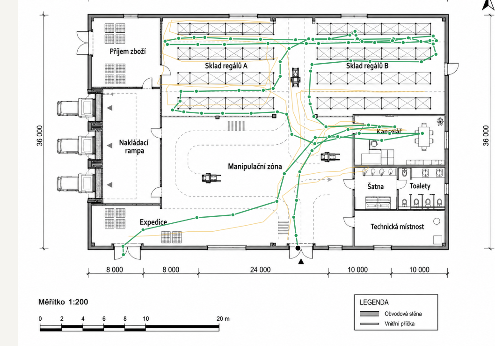

Andula si stěžovala že ji bolí nohy. Každý den, po každé směně. Brali jsme to jako normál. Výdej je prostě fyzicky náročný, ne?
Zpět na blogTak jsme vytáhly krokoměr. Jen tak, ze zvědavosti.
Andula pracovala na výdeji roky. Věděla co kde je. Nikdo si nestěžoval. Nikomu nic nechybělo.
Jenže nikdo nevěděl kolik toho nachodí. Dokud jsme to nezměřily.

Spaghetti diagram výdeje. Zelená linka = trasa Anduly za jednu směnu. 7,5 km jen na výdeji.
Nakreslily jsme spaghetti diagram. Zakreslily jsme každý pohyb. A bylo vidět kde se trasa zbytečně kříží a prodlužuje.
Přesunuli jsme šest položek v regálu. To bylo celé. Žádný projekt, žádná investice. Krokoměr, špagetek a selský rozum.
4,2 km. Nohy přestaly bolet. A Anča je veselejší.
A co je možná nejcennější. Od té doby důvěřuje změnám které plánujeme. Protože viděla na vlastní kůži že to není teorie.
Tohle je přesně to, proč měřím. Ne kvůli tabulkám. Ale proto, že číslo přesvědčí tam, kde slovo nestačí.
Přijedu, projdu provoz a do 4 týdnů víte, kde ztrácíte čas, peníze a zdraví lidí. Bez náboru, bez složitých systémů.
Chci procesní audit